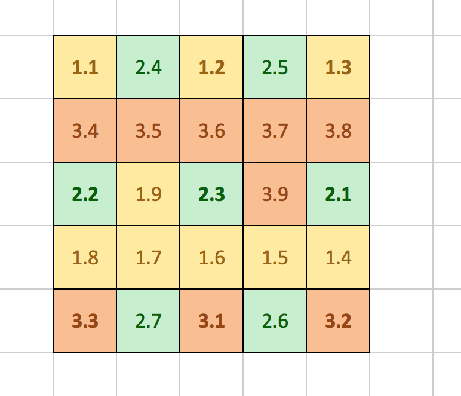

#MicroBitLightSensor
##Operation ###Sensing Pins
If the current is inverted on an LED, it becomes sensitive to light. In particular it is sensitive to the same colour of light it emits.
You will find that the Light Sensor on the micro:bit is more reactive to red light than any other colour because that is the colour of light the display emits.
The display is architected with 3 rows, each with 9 columns. This is illustrated below:

On the micro:bit we have 6 analog pins, 3 are applicable to the display and reside on columns 1, 2 and 3.
This means that we have 9 pins in total that we can sense light on if we are fast enough to transition between emitting and sensing light.
The 9 sense pins are illustrated below:
_____________________________
| 1.1 | | 1.2 | | 1.3 |
|_____|_____|_____|_____|_____|
| | | | | |
|_____|_____|_____|_____|_____|
| 2.2 | | 2.3 | | 2.1 |
|_____|_____|_____|_____|_____|
| | | | | |
|_____|_____|_____|_____|_____|
| 3.3 | | 3.1 | | 3.2 |
|_____|_____|_____|_____|_____|
The ADC takes around 4ms to settle and give accurate values with minimal current. This places restrictions on our sensing window.
###Interleaving
In the current implementation, the display and the Light sensor can operate in an
interleaving manner. This interleaving is enabled due to a special display mode on the display
which is automatically activated when readLightLevel is called by the user.
This special mode (DISPLAY_MODE_BLACK_AND_WHITE_LIGHT_SENSE), increases the rate of the systemTick callback to 5ms, and the
display is thusly configured to drop the 4th frame for user processing,
which in this case, is entirely consumed by the light sensor. This reduces the display
refresh rate from 55Hz to around 50Hz.
To signify the window for user processing, the display will fire an event:
- ID:
MICROBIT_ID_DISPLAY - Value:
MICROBIT_DISPLAY_EVT_LIGHT_SENSE
This will trigger an event handler in the MicroBitLightSensor class.
##Sensing Life Cycle
In the previous section we discussed how the display and the Light
Sensor interleave. This section will cover the actual operation of the sensor during
the MICROBIT_DISPLAY_EVT_LIGHT_SENSE event.
!!! note
If you would like to manually trigger the Light Sensor, a few steps must be taken:
1) Disable the display so that the column pins are under the users’ control.
2) Construct an instance of MicroBitLightSensor
3) Trigger the Light Sensor by firing a MicroBitEvent with the ID MICROBIT_ID_DISPLAY and the value MICROBIT_DISPLAY_EVT_LIGHT_SENSE.
####The Concept of Channels
As we previously discussed there are 9 pins we can sense light on. However, we face the problem of interference from the state of other Columns.
We found that the best combination was to treat each of the three analog enabled Columns as a channel. This leads our picture to look something more like this:
_____________________________
| 1 | | 2 | | 3 |
|_____|_____|_____|_____|_____|
| | | | | |
|_____|_____|_____|_____|_____|
| 2 | | 3 | | 1 |
|_____|_____|_____|_____|_____|
| | | | | |
|_____|_____|_____|_____|_____|
| 3 | | 1 | | 2 |
|_____|_____|_____|_____|_____|
This reduces the resolution of our light sensing capabilities as we can now no longer can use 9 pins to sense light, purely due to the unfortunate fact that we obtain interference from other pins that cannot be mitigated.
However, we do gain an accurate picture of the overall brightness detected by the display.
We expose a mean representation of the light level from the 3 channels on the display.
####The Algorithm
Upon receiving an event:
- Set all rows to be a DigitalOut, with a value of 0.
- For the current channel:
- Set the current channel pin HI.
- Immediately transition the current channel to be an AnalogIn
- Attach an interrupt to occur 4ms into the future. (This allows our AnalogIn instance to settle correctly)
Upon interrupt:
- Obtain our analog value.
- Release the pin from GPIOTE control. (If we do not do these, this column will not be useable in the display driver)
- Move onto the next channel.
After these two phases have occurred, the display will now once again be available for regular usage until the next interleave is signaled by the display.
##Message Bus ID
##Message Bus Events
#API
[comment]: <> ({“className”:”MicroBitLightSensor”})
##Constructor
####MicroBitLightSensor(
Create a representation of the light sensor.
map
The mapping information that relates pin inputs/outputs to physical screen coordinates. Defaults to microbitMatrixMap, defined in MicroBitMatrixMaps.h .
#####Parameters
const MatrixMap &map - The mapping information that relates pin inputs/outputs to physical screen coordinates. Defaults to microbitMatrixMap, defined in MicroBitMatrixMaps.h .
##read
####
A section is defined as:| 1 | | 2 | | 3 |
2 3 1
3 1 2
Where each number represents a different section on the 5 x 5 matrix display.
#####Returns
returns a value in the range 0 - 255 where 0 is dark, and 255 is very bright
##startSensing
####
#####Parameters
MicroBitEvent
!!! note this can be manually driven by calling this member function, with a MicroBitEvent using the CREATE_ONLY option of the MicroBitEvent constructor.
[comment]: <> ({“end”:”MicroBitLightSensor”})